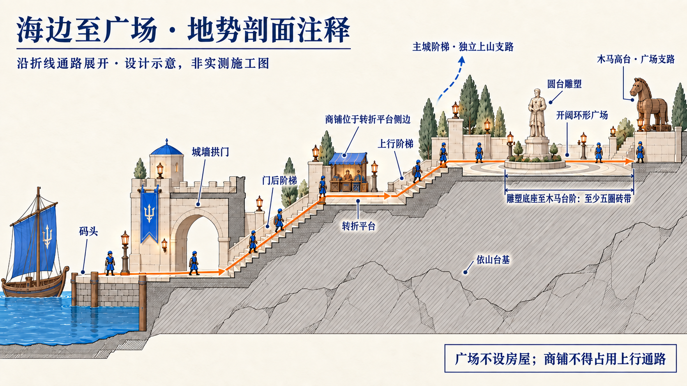

用户已确认：本页整组设计作为后续优化基准。完整场景图为主，独立地势图补充通路与高差。以实际游戏截图对照验收。
设计图，尚不是本轮游戏实景。路线：码头 → 城墙拱门 → 门后阶梯 → 转折平台 → 上行阶梯 → 开阔广场。商铺位于转折平台侧边，木马台与主城阶梯分别为广场支路。

剖面沿折线路径展开，不作为实际直线方位或精确尺寸。施工约束：从雕塑圆台外缘到木马阶梯起点保留至少五圈砖带宽度；图中尺寸线端点仅示意，以此文字约束为准。